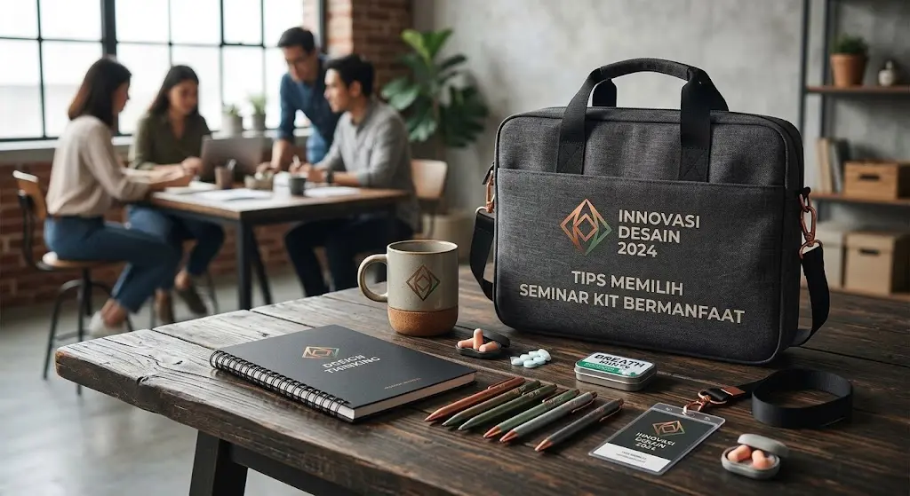

Poin Penting
- Pahami tujuan dan audiens acara Anda.
- Pilih barang yang punya nilai guna pasca acara.
- Perhatikan kualitas cetak dan bahan.
- Hitung anggaran per peserta dengan cermat.
- Pesan jauh hari dari penyedia terpercaya.
Daftar Isi
- Apa Itu Seminar Kit dan Mengapa Penting?
- 1. Tentukan Tujuan dan Jenis Acara Terlebih Dahulu
- 2. Pilih Isi Paket yang Benar-Benar Dipakai
- 3. Perhatikan Kualitas Bahan dan Hasil Cetak
- 4. Sesuaikan dengan Anggaran
- 5. Manfaatkan Branding Secara Cerdas
- 6. Pertimbangkan Waktu Produksi dan Pengiriman
- 7. Pilih Penyedia yang Terpercaya
- Checklist Cepat Sebelum Memesan
- FAQ
Seminar kit adalah paket perlengkapan yang dibagikan kepada peserta saat acara berlangsung, biasanya berisi tas, buku catatan, pulpen, name tag, dan materi acara. Seminar kit yang dipilih dengan baik membuat peserta lebih nyaman, membantu mereka mencatat, dan meninggalkan kesan positif tentang penyelenggara. Artikel ini membahas cara memilih seminar kit yang benar-benar terpakai, bukan sekadar menjadi pelengkap yang berakhir di laci.
Apa Itu Seminar Kit dan Mengapa Penting?
Seminar kit adalah satu set perlengkapan acara yang diterima peserta di meja registrasi. Fungsinya ada tiga:
- Fungsional: membantu peserta mengikuti acara, misalnya untuk mencatat dan membawa materi.
- Identitas: menampilkan nama dan logo penyelenggara atau sponsor sehingga acara tampil profesional.
- Kenang-kenangan: peserta membawa pulang barang yang masih bisa dipakai setelah acara selesai.
Seminar kit dipakai di seminar, workshop, pelatihan karyawan, konferensi, rapat kerja, wisuda, dan kegiatan kampus.
1. Tentukan Tujuan dan Jenis Acara Terlebih Dahulu
Isi seminar kit sebaiknya mengikuti karakter acara.
- Seminar dan workshop: buku catatan, pulpen, dan map atau folder materi.
- Pelatihan perusahaan: tas, notebook ber-logo, dan name tag lanyard.
- Acara kampus: tas serut atau tote bag, bolpoin, dan stiker.
- Konferensi atau acara besar: paket lebih lengkap, misalnya powerbank, botol minum, dan buku agenda.
Tentukan tujuan acara dulu, baru pilih barangnya. Cara ini mencegah Anda membeli barang yang tidak sesuai kebutuhan peserta.

2. Pilih Isi Paket yang Benar-Benar Dipakai
Barang yang jarang dipakai hanya menambah biaya. Seminar kit yang bermanfaat umumnya berisi:
- Tas atau tote bag: wadah utama yang bisa dipakai lagi setelah acara.
- Buku catatan dan pulpen: barang paling sering dipakai selama sesi berlangsung.
- Name tag dan lanyard: memudahkan peserta saling mengenal dan membantu panitia mengatur akses.
- Map atau folder: menyimpan materi, sertifikat, dan jadwal acara.
- Tambahan opsional: botol minum, stiker, flashdisk, atau powerbank bila anggaran mencukupi.
Aturan sederhananya: lebih baik tiga barang yang dipakai daripada tujuh barang yang diabaikan.
3. Perhatikan Kualitas Bahan dan Hasil Cetak
Kualitas seminar kit mencerminkan kualitas acara Anda. Hal yang perlu dicek:
- Bahan tas: pilih bahan yang kuat dan jahitannya rapi, misalnya kanvas, spunbond, atau goodie bag berbahan tebal.
- Kertas notebook: gramatur cukup agar tinta tidak tembus.
- Hasil sablon atau cetak: warna logo tajam dan tidak mudah luntur atau mengelupas.
- Fungsi pulpen: tinta lancar dan tidak mudah macet.
Minta contoh produk (sampel) atau lihat foto hasil produksi sebelumnya sebelum memesan dalam jumlah besar.
4. Sesuaikan dengan Anggaran
Tentukan anggaran per peserta lebih dulu, lalu susun isi paket di dalamnya. Beberapa tips:
- Prioritaskan barang yang paling berguna bagi peserta, seperti tas dan notebook.
- Pesan dalam jumlah besar karena harga satuan biasanya lebih murah.
- Sisakan cadangan sekitar 5-10% dari jumlah peserta untuk panitia, pembicara, atau peserta tambahan.
- Hitung biaya branding (sablon, bordir, cetak) sejak awal agar tidak ada biaya tak terduga.
5. Manfaatkan Branding Secara Cerdas
Logo di seminar kit membuat acara tampil profesional dan meningkatkan pengenalan merek. Agar tidak berlebihan:
- Letakkan logo dan nama acara dengan ukuran proporsional.
- Gunakan warna yang konsisten dengan identitas acara atau perusahaan.
- Jika ada sponsor, tampilkan logonya dengan porsi yang seimbang.
- Pilih desain yang rapi dan tidak terlalu ramai agar barangnya nyaman dipakai.
6. Pertimbangkan Waktu Produksi dan Pengiriman
Seminar kit yang ber-branding membutuhkan waktu produksi. Rencanakan dengan matang:
- Pesan paling lambat 3-4 minggu sebelum acara, lebih awal untuk jumlah besar.
- Siapkan file desain (logo) dalam format yang jelas agar tidak ada revisi berulang.
- Pastikan jadwal pengiriman tiba beberapa hari sebelum hari-H untuk pengecekan dan penataan.
7. Pilih Penyedia yang Terpercaya
Penyedia yang baik membantu Anda dari awal sampai barang tiba. Perhatikan:
- Kemudahan konsultasi dan kecepatan respons.
- Adanya contoh produk dan portofolio.
- Kejelasan harga, estimasi waktu produksi, dan kebijakan revisi.
- Kemampuan menyesuaikan isi paket dengan anggaran dan tema acara.
Checklist Cepat Sebelum Memesan
- Tujuan dan jenis acara sudah jelas
- Jumlah peserta (plus cadangan) sudah dihitung
- Anggaran per peserta sudah ditetapkan
- Isi paket sesuai kebutuhan peserta
- Sampel sudah dicek (bahan dan hasil cetak)
- Desain logo siap dan disetujui
- Jadwal produksi dan pengiriman aman sebelum hari-H
Seminar kit yang bermanfaat berawal dari perencanaan: pahami tujuan acara, pilih isi yang benar-benar dipakai, jaga kualitas bahan, sesuaikan dengan anggaran, dan pesan jauh-jauh hari. Dengan begitu, seminar kit menjadi alat pendukung acara sekaligus media promosi yang diingat peserta.
Butuh Bantuan Menyusun Seminar Kit?
Tim CorporateKita siap membantu Anda mengkurasi, mendesain, dan memproduksi seminar kit premium. Konsultasikan kebutuhan Anda via WhatsApp sekarang →
FAQ (Tanya Jawab)
Artikel Terkait Terbaru
Ide Corporate Gift Eksklusif
Rekomendasi hadiah perusahaan yang berkesan untuk klien VIP.
Pilihan Souvenir Kantor Fungsional
Barang-barang promosi yang sering dipakai di meja kerja.
Pentingnya Hampers Lebaran
Manfaat memberikan bingkisan hari raya untuk mitra bisnis.